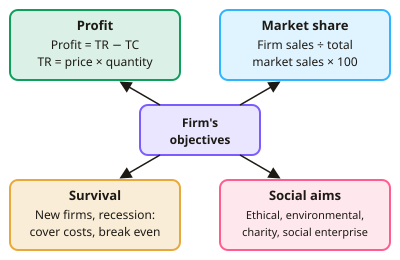

GCSE Economics · Topic 5
Competitive and Concentrated Markets
This topic compares markets with lots of competition to markets dominated by a few big firms.
We will look at firms' objectives, how businesses grow, and the features of monopoly and oligopoly.
Then we see how the government uses competition policy and regulation to protect consumers, with real case studies.
- 4 subtopics
- 192 questions
- Free: 5.1 notes and 10 questions
In this topic
- 5.1Competitive markets and firms' objectives: profit, market share, survival and social aimsFree below · 55 questions
- 5.2Business growth: organic growth, mergers, takeovers and integrationOpen in Full Marks · 39 questions
- 5.3Monopoly, oligopoly and concentration ratiosOpen in Full Marks · 39 questions
- 5.4Competition policy, regulation and case study of dominant firms (supermarkets or digital platforms)Open in Full Marks · 59 questions
5.1 · Free notes
Competitive markets and firms' objectives: profit, market share, survival and social aims

Key points
- A competitive market has many buyers and sellers, similar products, low barriers to entry and exit and good consumer information. Firms have little power over price and must keep customers by being efficient.
- Profit maximisation is the main assumed objective. Profit = total revenue (TR) − total costs (TC), where TR = price × quantity sold. Profit is highest where the gap between TR and TC is greatest.
- Worked example: selling 2,000 units at £15 gives TR = £30,000. If TC = £24,000, profit = £6,000. Always show the formula and use £ units in calculations.
- Market share = (firm's sales ÷ total market sales) × 100. A firm may cut prices to raise market share. This can give it more bargaining power with suppliers, economies of scale and a stronger brand.
- Survival is the key objective for new firms, or for any firm in a recession or price war. The firm may aim only to break even (TR = TC) and cover its costs rather than make high profit.
- A firm that sells below cost may survive in the short run, for example by using cash reserves. It cannot do so in the long run without making a loss and eventually closing.
- Social aims include ethical sourcing, reducing environmental damage and supporting the community. Social enterprises, charities and co-operatives reinvest profits into their social purpose instead of paying shareholders.
- Other objectives are sales (revenue) maximisation and growth. Managers may favour these because their pay or status is linked to size. This can conflict with shareholders, who want profit (the principal–agent problem).
- Objectives differ by type of firm: private-sector firms mainly seek profit, while not-for-profit organisations seek social aims. They also change over time, such as pursuing survival in a recession and then profit in a boom.
- Objectives can conflict. Cutting prices to raise market share reduces profit per unit in the short run. In evaluation, discuss short run versus long run, for example penetration pricing.
- Competition benefits consumers through lower prices, higher quality, more choice and innovation. Firms in competitive markets cannot easily charge high prices without losing customers.
In more detail
- Worked market share: a firm sells £3m in a market worth £20m → market share = 3 ÷ 20 × 100 = 15%.
- Worked conflict: cutting prices by 10% might lift market share from 15% to 18% but reduce profit per unit, so the firm must decide which matters more right now.
- Social enterprises: some firms reinvest most of their profit in social aims, such as employing ex-offenders or funding clean water projects, rather than paying shareholders.
- Exam tip: link the objective to the type and situation of the firm: a start-up → survival; a plc → profit for shareholders; a charity → social aims.
Practice
Competitive markets and firms' objectives: profit, market share, survival and social aims: 10 questions
Pick an answer to check it, or open the answer for the explanation.
1. A firm has sales of £12 million in a market where total sales are £80 million. What is its market share?
- 85%
- 15%
- 6.7%
- 12%
Show answer
B: 15%. Market share = (12 ÷ 80) × 100 = 15%.
2. A new café opens in a town with several established cafés. Which objective is it most likely to have at first?
- Sales to every customer
- Maximising social benefit
- Survival
- Dominating the market
Show answer
C: Survival. New firms usually focus on surviving and covering costs while building a customer base. Dominating the market is unrealistic at the start.
3. What does profit maximisation mean for a firm?
- Selling the highest possible quantity
- Charging the highest possible price
- Having the lowest possible costs
- Making the biggest gap between TR and TC
Show answer
D: Making the biggest gap between TR and TC. Profit maximisation means achieving the largest positive difference between total revenue and total costs. Maximum sales, price or minimum cost alone does not guarantee this.
4. Why might a firm deliberately cut prices and accept lower profit this year?
- To increase costs
- To reduce its revenue
- To raise its market share
- To shut down
Show answer
C: To raise its market share. Lower prices can attract customers from rivals, raising market share. The firm may gain brand loyalty or economies of scale in the long run.
5. A firm is at its break-even point. Which statement is correct?
- Total revenue equals total costs
- Total revenue is double total costs
- Profit is at its maximum
- Total revenue is below total costs
Show answer
A: Total revenue equals total costs. At break-even, TR = TC, so the profit is zero. It is not necessarily the profit-maximising point.
6. A firm has total revenue of £50,000 and total costs of £58,000. What is true?
- It makes a loss of £108,000
- It is making a loss of £8,000
- It makes a profit of £8,000
- It is exactly breaking even
Show answer
B: It is making a loss of £8,000. Profit = TR − TC = £50,000 − £58,000 = −£8,000, which is a loss of £8,000.
7. Which is a typical feature of a competitive market?
- Many sellers and low barriers to entry
- One firm controls most of the supply
- Very few consumers have any information
- Firms can easily set any price
Show answer
A: Many sellers and low barriers to entry. Competitive markets have many buyers and sellers and easy entry and exit. This limits any firm's ability to set prices.
8. Managers who want a bigger firm may pursue sales growth, while shareholders want profit. What is this conflict called?
- Market failure
- Opportunity cost
- The principal–agent problem
- The multiplier effect
Show answer
C: The principal–agent problem. The principal–agent problem is where managers (agents) pursue different aims from owners (principals), such as growth rather than profit.
9. Which organisation is most likely to have social aims as its main objective?
- A large fast-food chain
- A new tech start-up
- A listed oil company
- A charity running a shop
Show answer
D: A charity running a shop. Charities trade to raise funds for a cause, so social aims come before profit. The other firms mainly pursue profit or growth.
10. A firm's market share rises from 10% to 12% in a market worth £500 million that stays the same size. What is the increase in its sales?
- £2 million
- £10 million
- £50 million
- £60 million
Show answer
B: £10 million. 10% of £500m = £50m and 12% = £60m, so the rise is £10m.
Keep going in Full Marks
Full Marks has 55 questions on Competitive markets and firms' objectives: profit, market share, survival and social aims (45 more than here), set out in practice levels. You also get notes and 3D models for all 4 subtopics of Competitive and Concentrated Markets, plus games, timed exams and past papers.